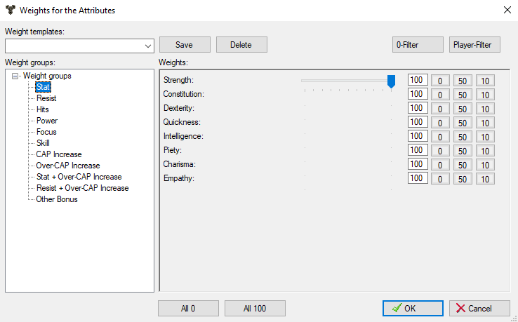

Weights

Here the weights can be set, i.e. how important a particular value is to a
player.
The weighting here largely determines the calculation of the utility of an object.
Classes that can train multiple weapons should set the untrained skills to 0, so that items that increase all weapon skills at the same time are not unnecessarily highly rated.